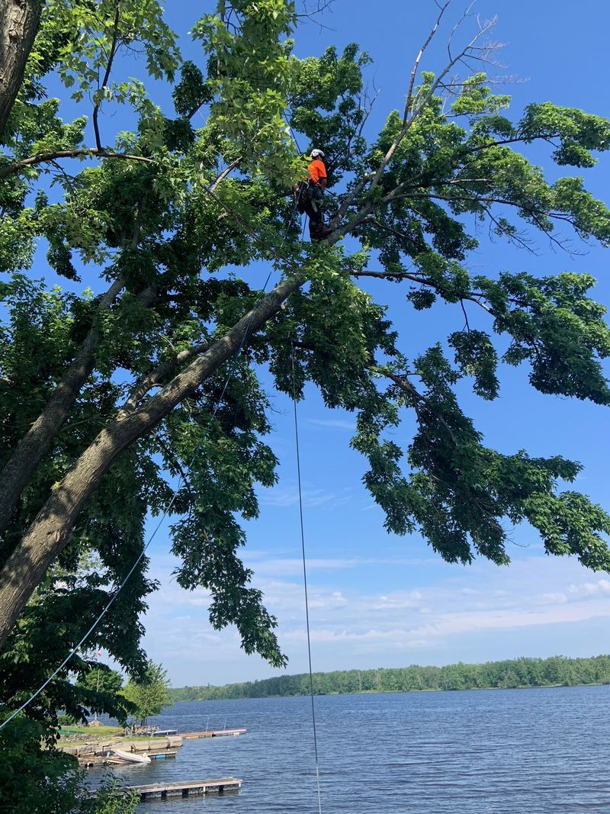

To prune a large branch, cut just outside the branch collar using three cuts: an undercut, a top cut further out, then the final cut at the collar. That keeps the bark from tearing and lets the tree seal the wound. It works for limbs you can reach from the ground. Long, high or heavy branches, anything near power lines, and any job that needs a ladder or a chainsaw above shoulder height are for a trained crew.

Every branch grows out of a slightly swollen ring of tissue where it meets the trunk or a larger limb. This is the branch collar, and it holds the tree's natural defences against decay. A good pruning cut is made just outside the collar, leaving the ring intact. The tree can then seal the wound over time.
Two cuts cause most of the damage we see. A flush cut, made right against the trunk, removes the collar and leaves a larger wound that is slower to close. A stub cut, which leaves a long piece of branch sticking out, cannot seal at all, and the stub rots back into the tree. Cutting at the collar avoids both.
A heavy limb that is simply cut from the top will fall before the cut is finished and peel a strip of bark down the trunk. That tear can run well below the cut and is far more harmful than the pruning wound. The three-cut method prevents it:
Wound paint and sealants are not needed. Research on tree wounds has found they do not help the tree heal.
Small jobs are reasonable for a homeowner with the right tools: hand pruners or loppers for twigs and branches up to about the thickness of your thumb, and a sharp pruning saw for limbs up to a few centimetres across that you can reach with both feet on the ground.
Keep to these limits:
Searches such as "pruning long branches" usually describe a limb that has reached over a roof, a driveway or a neighbour's yard. These are the cases that go wrong most often. A long branch carries its weight far from the trunk, so it acts like a lever, and cutting it in one piece can send it somewhere you did not plan.
A crew handles these by taking the limb off in sections, lowering heavy pieces with ropes, and controlling where each piece lands. A branch over a house, a car or a fence needs rigging, not a bigger saw.
Call a professional if:
Never prune a branch that is touching or near a power line, and never use a pole saw or ladder near one. Electricity can travel through a wet branch, a pole or a ladder. Keep well back and call the utility. Work near lines is done by qualified line clearance crews, not by homeowners.
Most pruning damage comes from a short list of habits:
A pole saw can reach branches that are a few metres up, and it is a sensible tool for small limbs. It also has limits. A heavy branch cut on a pole saw falls toward you, the saw is hard to hold steady, and the final cut at the collar is hard to place. Pole saws and metal ladders are also the tools most often involved in contact with power lines. If the branch is much thicker than your wrist, or if you cannot see exactly where the cut will land, leave it for a crew.
A tree can lose some of its crown and recover, but heavy cutting stresses it. A common guideline is to remove no more than about a quarter of the live crown in a season, and less from older trees. Never top a tree, which means cutting main stems back to stubs. Topping produces weak, fast-growing shoots and often shortens the tree's life.
Remove the right branches, not the most branches. Dead, broken, diseased and crossing branches come first. Our guide to warning signs of a dangerous tree shows what to look for.
Late winter, while the tree is dormant, suits most trees in Ottawa, but oaks, maples, birches and spring-flowering trees have their own timing. Dead or hazardous branches can be removed any time of year. Our guide to when to prune trees in Ottawa gives the season-by-season detail.
After wind, ice or heavy snow, branches may be cracked, partly torn from the trunk or caught up in the crown. These are hazards, and they behave unpredictably. The wood is under tension, and a cut can release it suddenly. Keep people away from the area under the branch and call for help instead of climbing up or reaching under it. Our guide to dangerous tree warning signs explains what to check afterwards, and our crews offer 24-hour emergency service.
A correct cut at the branch collar looks like a ring of tissue that slowly rolls over the wound. This is normal, and it can take a few years on a large cut. Watch for signs of trouble such as oozing, a cavity forming or fungus growing at the cut, and have the tree looked at if you see them. Nothing needs to be painted on, and extra fertilizer does not help.
Under Ottawa's Tree Protection By-law, work that maintains a tree's health and follows good arboricultural practice does not need a permit, but heavy cuts or damage can still count as injuring a protected tree. A tree on the City boulevard belongs to the City: call 3-1-1 rather than working on it yourself.
Bisson Services handles tree pruning across Ottawa and Prescott-Russell, including long, high and heavy limbs, with service in English and French. Call (613) 558-4806 for a free estimate. If the branch is part of a tree that should come down, we also do tree cutting and removal.
Just outside the branch collar, the slightly swollen ring where the branch meets the trunk or a larger limb. Do not cut flush against the trunk, and do not leave a long stub.
An undercut part way through the underside of the branch, a top cut a little further out to remove the weight, then a final cut just outside the branch collar. It prevents the bark from tearing down the trunk.
No. Sealants and paint are not needed, and research has found they do not help trees heal.
No. Stay well away and call the utility. Work near lines is done by qualified crews.
A common guideline is no more than about a quarter of the live crown in a season. Never top a tree.
Work that maintains a tree's health and follows good arboricultural practice does not need a permit under the Tree Protection By-law. A tree on the City boulevard belongs to the City, so call 3-1-1.
Free on-site estimates, bilingual service, 24-hour emergency response. Bisson aims to reply the same day.